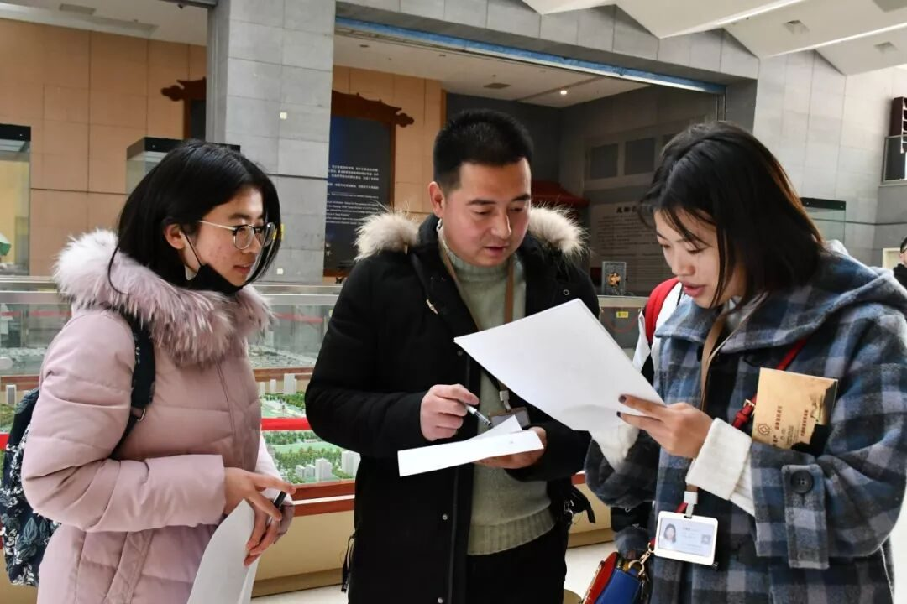
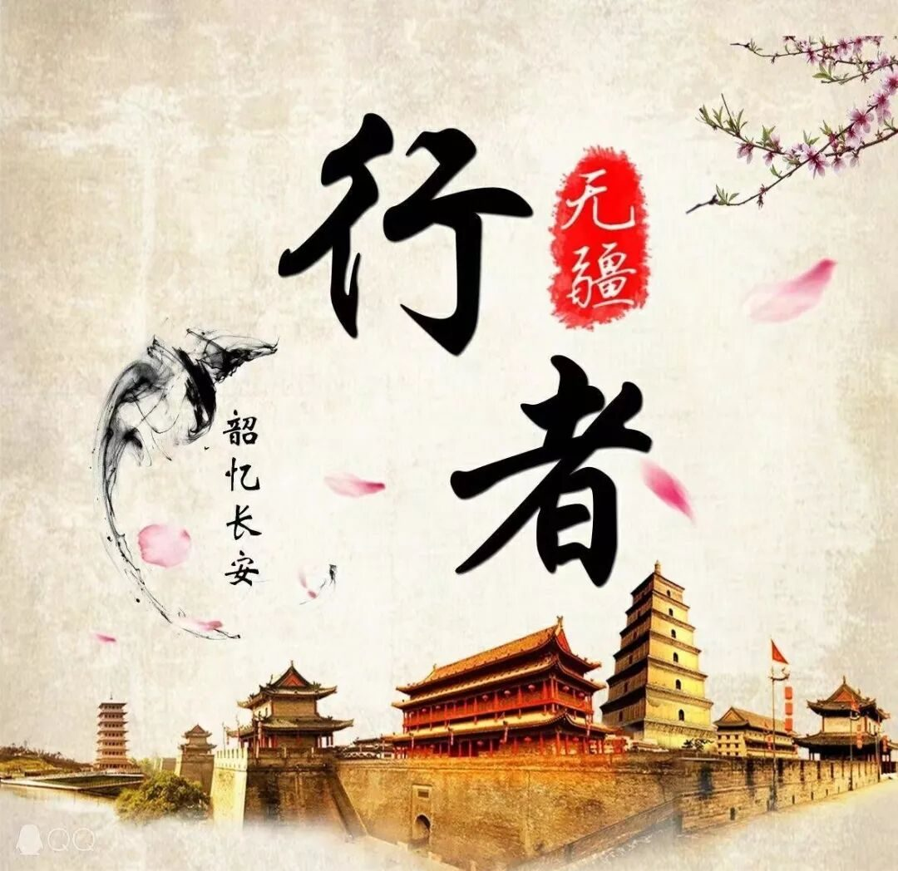
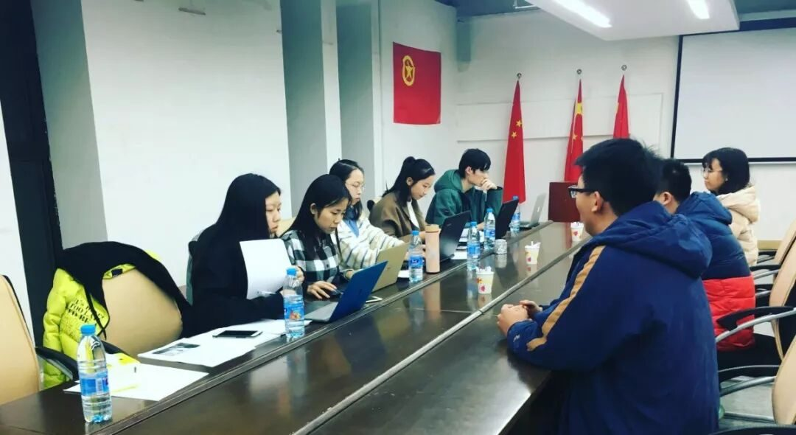
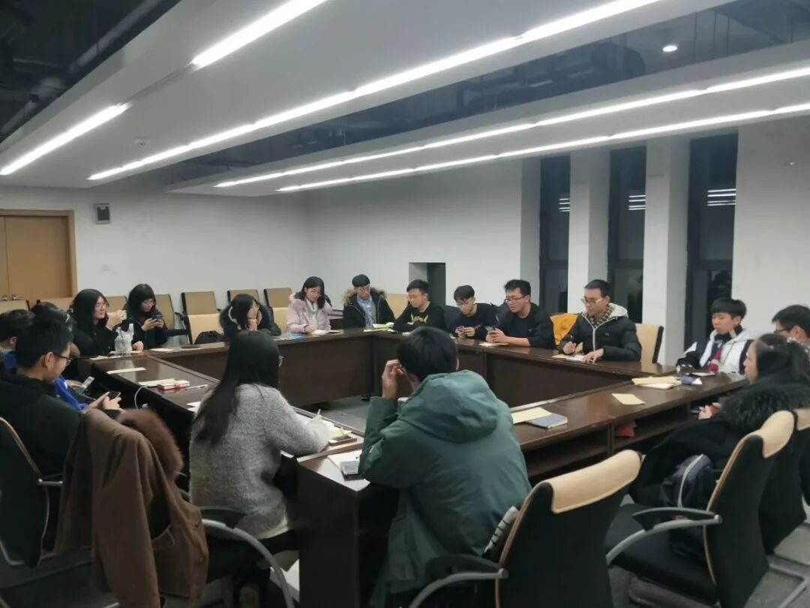
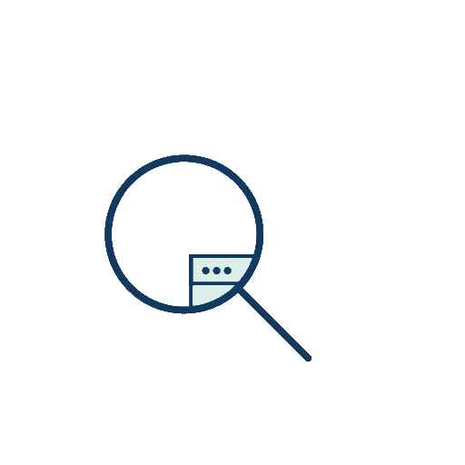
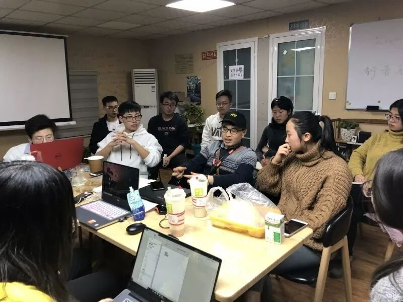

【秦简拓语·十三】确认过眼神，是一次值得回味的实践经历



《晏子春秋内篇·杂下》有这段对话：“梁丘据谓晏子曰：‘吾至死不及夫子矣’晏曰：‘婴闻之，为者常成，行者常至。婴非有异于人也，常为而不置，常行而不休者，故难及也。’”这说的就是：“思者无域，行者无疆。”


我在加入“行者无疆”实践团之前，只知道它是一个文化调研类的实践团队，从没参加过调研活动的我，对这个团队很是好奇。于是我开始试着了解它，看过了“行者无疆”的所有推送和官Q说说，也从学长学姐哪里打听到一些关于行者无疆的信息，慢慢地，我理解了“行者无疆”的含义，明白了实践团的目的，也发现了它是那么的与众不同。

前期报名表的设计很有针对性，面试的环节十分注重细节，之后的实践策划也详细周到，可见团队的用心和负责，这些让我觉得这个团队专业度和可信度很高，是一个靠谱的团队，值得我去加入。
当我幸运地加入实践团，成为一名宣传专员后，我发现实践团的准备工作远比我想象的更多更细致。推送说说、文化科普、校园采访、调查问卷、队旗队牌、车票路线、会议、合照、策划、保险……这些事情全都在考试月涌来，但是，团队明确的分工和认真负责的队友可以将每件事情有序地解决。因为“行者无疆”实践团已经是第五次开展实践活动了，逐渐形成了规范有序的管理体系和工作模式，实践团队的每项任务、每个安排都是经过认真策划决定的，这也更让我觉得成为“行者无疆”的一员，是一个正确的选择。



踏上去往西安的火车，实践活动正式开始。明城墙、陕历博、钟楼、碑林、大明宫、阿房宫、大唐芙蓉园、大小雁塔、华清池、兵马俑、乾陵……都留下了行者的足迹，或问卷调查，或街头采访，或观察提问，我们在尽力去做文化调研。通过自己的行动，了解文物保护的现状和存在的问题，利用自己的力量让更多的人注意到文物保护的重要性，增强意识。

实践期间，让我觉得最有意义的是每天晚上的团队会议。大家在一起分享一天的感受，可能是问卷调查时遇到的热情老大爷，可能是看到的某些文物破坏现象，可能是自己对西安这个城市的印象，可能是在发放问卷方面的小技巧，也可能是自己对文物保护问题的见解……
大家19个人围坐在一起，分享温暖时，彼此感动；讲述乐事时，相视而笑；指出问题时，一起思考；发现困难时，相互帮助。
我想，大家回忆起这段经历时，一定是眼角下弯，嘴角上扬。
来源丨行者无疆实践团
文字丨王洁
排版丨牛直达
审核丨潘雯雯 邓子孚
行者无疆实践团
QQ：2758025831

随行者一起认识世界
长按二维码关注